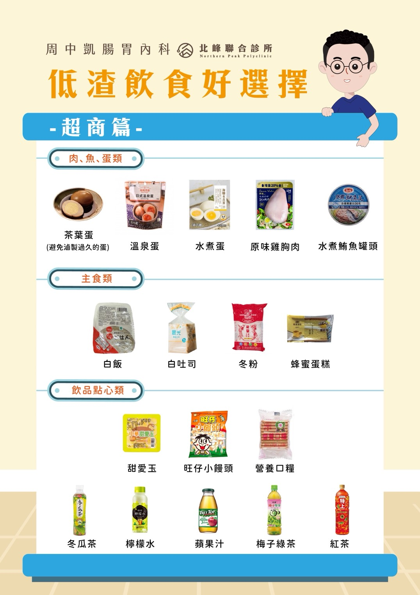

腸道清得乾不乾淨，直接決定醫師看不看得到息肉。請先在下面選擇你拿到的是哪一種飲食方式，我們會排出屬於你的時間表。
你採用哪一種檢查前飲食？
距離檢查還有 —
不想自己準備的話，以下都是便利商店就買得到的低渣選擇。檢查前一天起就不能再吃固體食物，這些只適用於低渣飲食那幾天。
茶葉蛋（避免滷製過久的蛋）、溫泉蛋、水煮蛋、原味雞胸肉、水煮鮪魚罐頭
白飯、白吐司、冬粉、蜂蜜蛋糕
甜愛玉、旺仔小饅頭、營養口糧、冬瓜茶、檸檬水、蘋果汁、梅子綠茶、紅茶

點圖片可以放大看
喝完第二劑、跑了幾趟廁所之後，低頭看一眼馬桶。這是你唯一能自己判斷的方法。
像淡茶或稀釋過的運動飲料，沒有明顯碎渣——這代表清腸成功，可以準備檢查。若仍是混濁的褐色水，多半是水喝得不夠；在還來得及的情況下再補幾杯白開水，通常就會轉清。
| 藥物 | 怎麼處理 |
|---|---|
| 口服 GLP-1 瘦瘦針劑 | 請停藥一週，待做完大腸鏡後再使用 |
| 緩解便秘藥物 | 請勿停藥，應繼續服用 |
| 降血糖藥 抗凝血劑 | 請依醫師指示停藥 |
| 其他藥品 | 應於服用清腸劑前 2 小時，或清腸後 6 小時服用 |
有沒有切除息肉，注意事項差很多。檢查結束時醫師會告訴你屬於哪一種，請以醫師當下的說明為準。
切除息肉後的出血不一定當天發生，一週內都要留意。
清腸過程中若有任何疑問或不適，請透過 Line 詢問，或撥打 24 小時免付費諮詢專線。
用手機掃描 QR code，或在 Line 搜尋上面的 ID 加入診所帳號，加入後直接留言詢問。
檢查前一天晚上 20:00，我們會主動傳訊息詢問你的解便次數與補水狀況，請務必先加入好友。
在 Line 開啟並加入好友保可淨要用常溫冷水 150 c.c. 沖泡，這是為了讓它完整溶解，請不要改水量。溶解後可以用吸管喝到舌根後方避開味蕾，或喝完含一顆硬糖。後面補水的那 1250～2000 c.c. 就自由得多：以白開水為主，可以搭配運動飲料或清湯（菜湯、魚湯、肉湯）換口味。
絕對不可以。保可淨粉末直接接觸食道會造成灼傷。一定要先用 150 c.c. 常溫冷水攪拌 3～5 分鐘完全溶解，溶解過程杯子會微微發熱是正常的，溶解後立刻把藥液全部喝完。
先暫停 30 分鐘讓胃緩一緩，然後放慢速度小口續喝，不要一口氣灌。大多數人休息後可以喝完。如果暫停後仍然一喝就吐、完全無法繼續，請透過 Line 或 24 小時諮詢專線詢問。
不行。小腸整晚仍會持續分泌，前一晚洗乾淨的腸道到了早上又會覆上一層黏液。檢查當天早上 5 點的第二劑是清腸品質的關鍵，少了它，息肉被遮住的機會明顯上升。
是的。這是麻醉安全的界線，不是清腸的要求——胃裡有液體時做鎮靜麻醉，有嗆入肺部的風險。若有非停不可的藥需要服用，請先透過 Line 確認。另外提醒，自費麻醉者檢查當天須有家屬陪同，且不可自行開車或騎車。
填好上面的檢查日期之後，按下面的按鈕會印出屬於你的時程表，日期都已經換算好。手機也可以按，選「存成 PDF」就能存在手機裡。
A4 直式，約 2 頁。補水的杯子會印成空格，喝完一杯自己打勾。